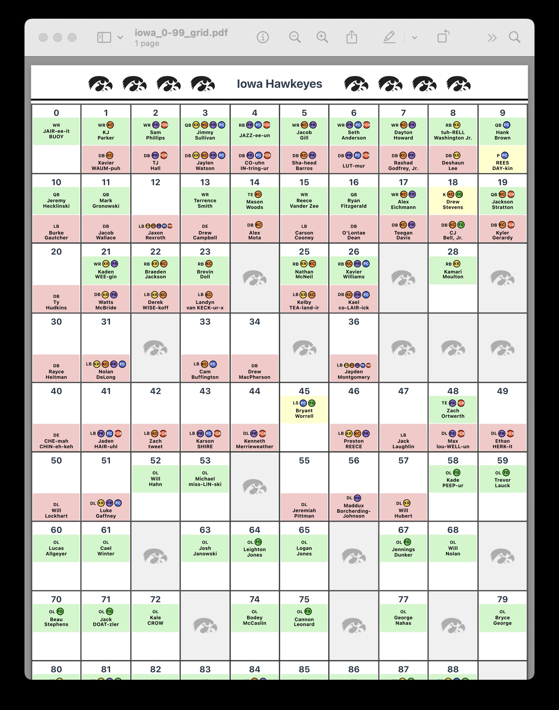
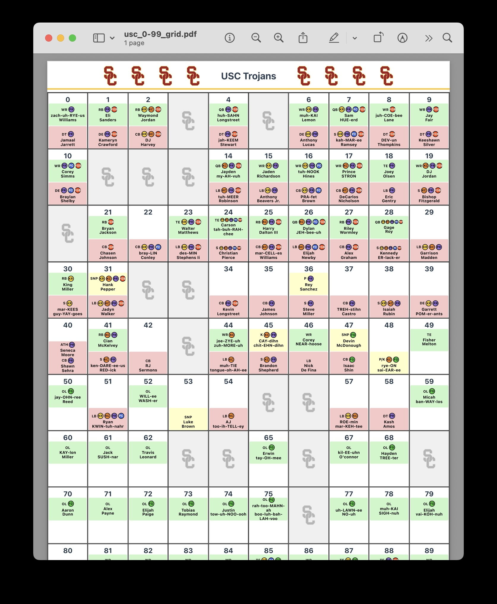
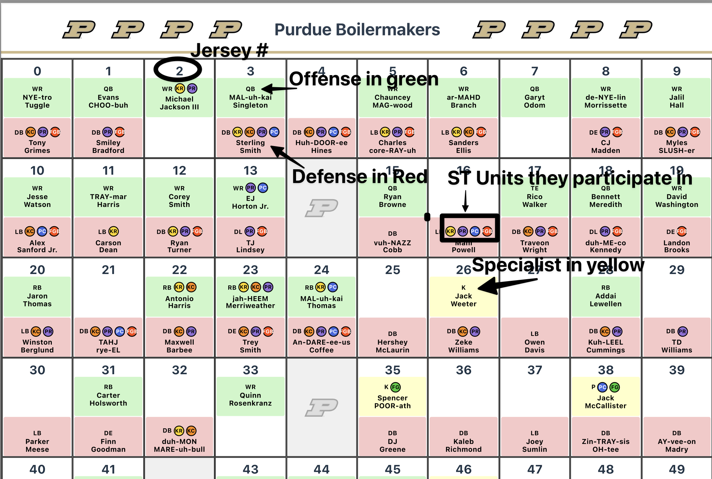

0-99 Spotting Grid for Play-by-Play Commentators
A data-driven "0–99" spotting grid for play-by-play commentators, designed to be printed and referenced during live games.
Built using team rosters, phonetic pronunciations, and special teams snap counts to create a clear, visual roster card that supports fast, accurate identification on the call. Especially valuable in college football, where duplicate jersey numbers are common in special teams situations.
A simple, game-ready tool that reduces on-air friction and helps broadcasters call plays with confidence and speed.